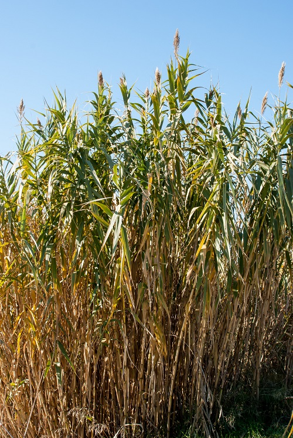

Ayuntamiento de Senés
JARDIN BOTANICO DE ESPECIES AUTOCTONAS DE SENES

Arundo donax

La caña común (Arundo donax) es una planta herbácea perenne de gran tamaño, muy característica de zonas húmedas y cauces de agua en el ámbito mediterráneo. Se trata de una especie de crecimiento rápido y gran capacidad de expansión.
Puede alcanzar entre 3 y 6 metros de altura, formando densas masas de tallos altos y rígidos. Sus hojas son largas, anchas y de color verde, mientras que sus inflorescencias aparecen en forma de grandes panículas plumosas en la parte superior de la planta.
La caña común es típica de regiones mediterráneas y subtropicales, donde crece en riberas de ríos, acequias, ramblas y zonas con presencia de agua, tanto permanente como estacional.
En la Sierra de los Filabres y su entorno, aparece en cauces y zonas húmedas, formando densos cañaverales que modifican el paisaje y crean hábitats específicos.
La caña común ha sido utilizada tradicionalmente por sus propiedades estructurales más que medicinales. Sus tallos son ligeros, resistentes y flexibles, lo que los hace útiles en diferentes aplicaciones.
También tiene interés ecológico, aunque en algunos casos puede comportarse como especie invasora debido a su rápido crecimiento y capacidad de expansión.
La caña común simboliza la flexibilidad y la adaptación, ya que sus tallos se doblan con el viento sin romperse. Representa la capacidad de resistir sin perder estabilidad.
También está asociada a la abundancia y a la presencia de agua en el paisaje.
En Senés, la caña común ha sido ampliamente utilizada en la construcción tradicional, especialmente en techumbres, cercados y estructuras agrícolas. Su abundancia en zonas húmedas la convertía en un recurso accesible y muy valorado en la vida rural.
La tradición senesera decía que es una planta diurética y que no debía tomarla las mujeres que amamantaban.
La caña común florece entre finales de verano y otoño, produciendo grandes inflorescencias plumosas que destacan sobre el conjunto de la planta.
La caña común es una de las plantas de mayor crecimiento en el ámbito mediterráneo, pudiendo formar extensos cañaverales en poco tiempo.
Ha sido utilizada históricamente para fabricar instrumentos musicales, como flautas o cañas para instrumentos de viento.